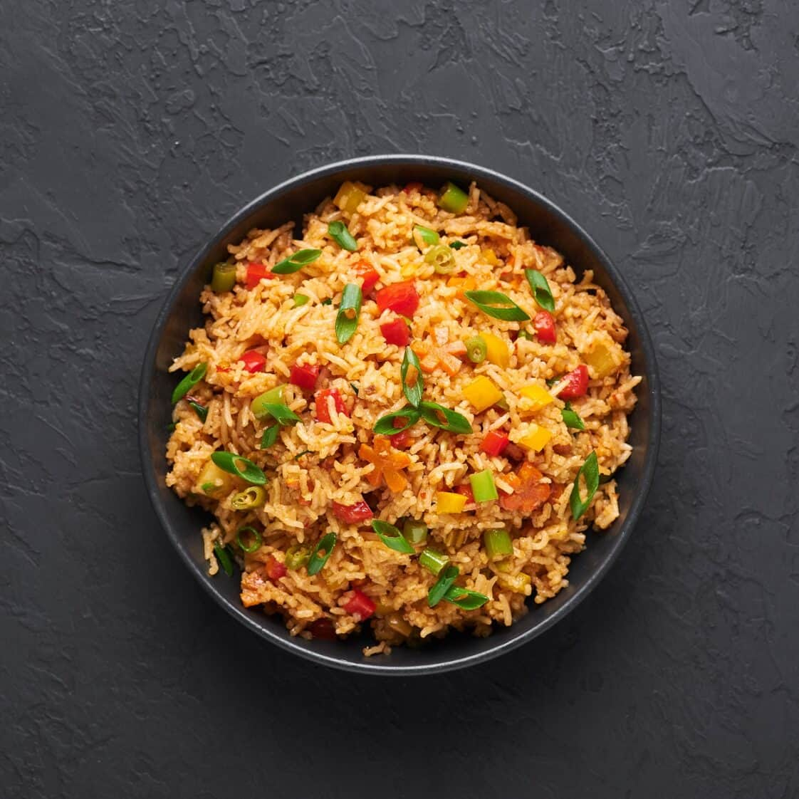
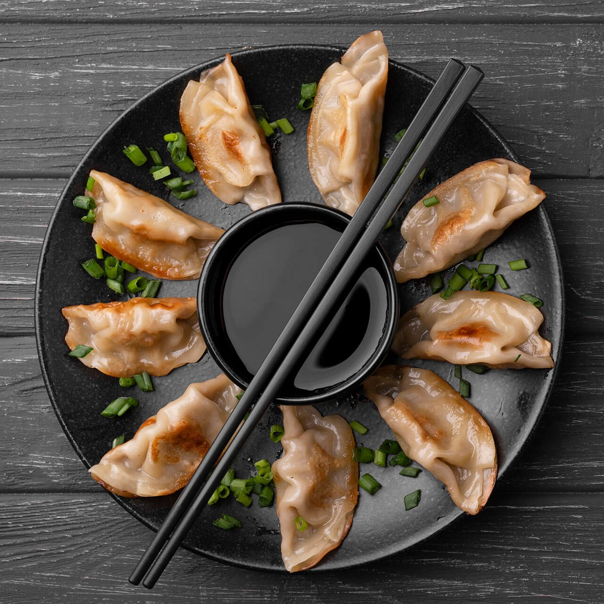
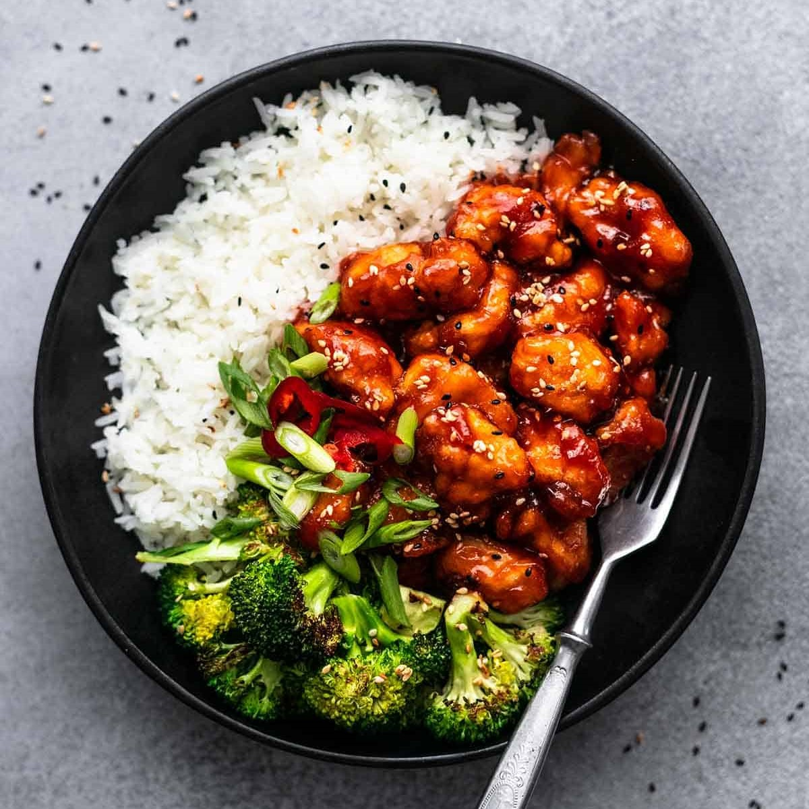
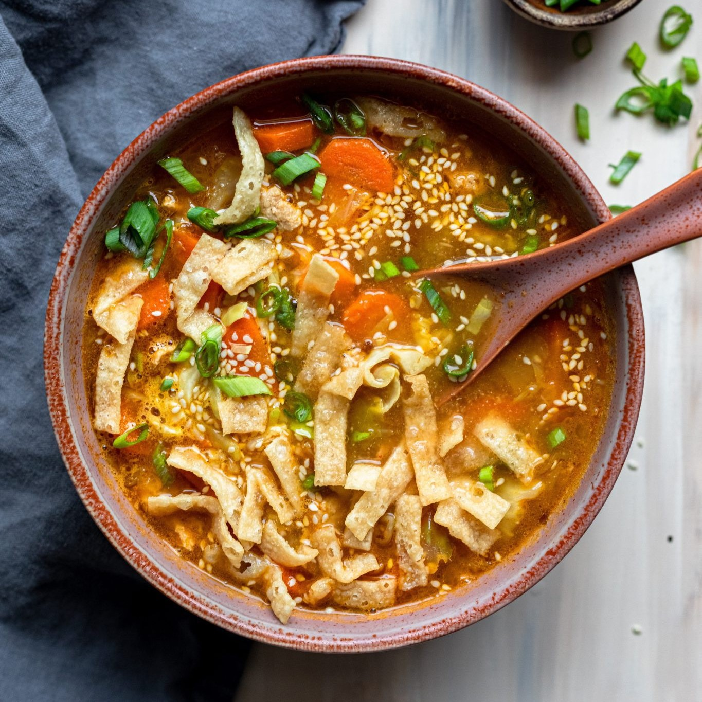

Related Recipes
   Recipe Description
Fried rice is a popular and flavorful dish made by stir-frying cooked rice in a wok or large pan, often with vegetables, protein, and seasonings. It’s a versatile dish that can be customized to suit various tastes and dietary preferences.
Fried rice is a popular and flavorful dish made by stir-frying cooked rice in a wok or large pan, often with vegetables, protein, and seasonings. It’s a versatile dish that can be customized to suit various tastes and dietary preferences.
Recipe Ingredients
2 cups cooked rice (preferably day-old)
2 tablespoons vegetable oil
1 small onion, diced
1/2 cup peas (fresh or frozen)
1/2 cup diced carrots
2 cloves garlic, minced
2 eggs, beaten
1/2 cup cooked chicken, shrimp, or tofu (optional)
3 tablespoons soy sauce
1 teaspoon sesame oil (optional)
1/4 teaspoon black pepper
2 green onions, chopped
Recipe Directions
Rice: Typically, day-old cooked rice works best, as it’s less sticky and absorbs
the flavors better.
Vegetables: Commonly includes diced carrots, peas, onions, and sometimes bell
peppers or corn.
Protein: Can include chicken, shrimp, pork, or tofu, though it’s often made as
a vegetarian dish.
Seasonings: Soy sauce is the key seasoning, giving the dish a savory umami flavor.
Garlic, ginger, and sometimes oyster sauce, sesame oil, and chili sauce can
be added for extra flavor.
Eggs: Scrambled eggs are usually incorporated into the rice, providing a creamy
texture and additional richness.
Garnishes: Chopped green onions, cilantro, or sesame seeds may be sprinkled on
top for added freshness and crunch.
Nutrition Information
- Calories: 250-350 kcal
- Protein: 6-8 g
- Carbohydrates: 40-50 g
- Fiber: 1-2 g
- Sugars: 2-4 g
- Fat: 8-12 g
- Saturated Fat: 1-2 g
- Cholesterol: 50-150 mg
- Sodium: 600-900 mg
- Potassium: 200-300 mg
- Vitamins and Minerals:
- Vitamin A: 40-70% of daily value
- Vitamin C: 10-15% of daily value
- Iron: 10-15%